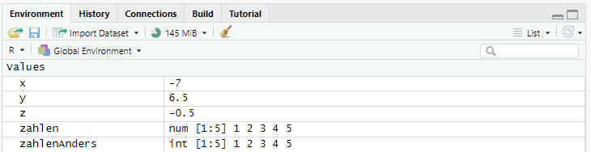
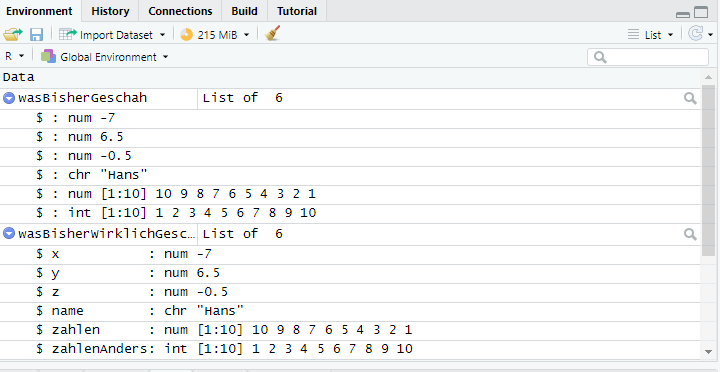

# Erstellt die Objekte x und y mit den Werten 3 und 6
x <- 3
y <- 62 Objekte, Daten, Funktionen
Nachdem Sie im letzten Kapitel ein Projekt angelegt haben und ein neues Skript erstellt haben, werden Sie in diesem Kapitel einige Dinge kennenlernen, die man üblicherweise in einem Skript findet. Konkret werden wir uns mit Objekten und verschieden Objekttypen beschäftigen, mit Funktionen, die uns erlauben etwas mit diesen Objekten zu tun, mit Paketen, die solche Funktionen zur Verfügung stellen und mit Daten, unserem eigentlichen Kerngeschäft.
2.1 Objekte
Im letzten Kapitel haben Sie bereits zwei wichtige Dinge über Objekte erfahren:
- Objekte können erst einmal alles mögliche sein, z.B. einzelne Variablen oder ganze Datensätze.
- Objekte werden im Environment angezeigt.
In diesem Kapitel lernen Sie, wie Sie Objekte deklarieren, wie Objekte benannt sein sollten und welche Objekttypen es gibt.
2.1.1 Objekte deklarieren
Sie können Objekte erstellen und ihnen einen Wert zuzuweisen, indem Sie einen Namen für das Objekt in ihr Skript schreiben, daneben einen Pfeil (<-) und danach den Wert des Objektes deklarieren.1
So wie hier:
Mit diesem Code haben wir zwei Objekte erstellt: Das Objekt x mit dem Wert 3 und das Objekt y mit dem Wert 6. Mit diesen Objekten können wir jetzt weiterarbeiten, z.B. indem wir sie addieren. Indem wir z noch mal einzeln in eine Zeile schreiben, können wir uns den Wert direkt in der Konsole anzeigen lassen.
# Berechnet das Objekt z aus den Objekten x und y
z <- x+y
# Zeigt den Wert von z in der Konsole an
z[1] 9Wenn wir jetzt den Wert von x oder y ändern, ändert sich durch erneutes Ausführen des Befehls auch der Wert von z.
# Der Wert von x wird geändert
x <- 7
# z wird neu berechnet
z <- x+y
z[1] 13Die Objekte x, y und z sind bisher jeweils natürliche (also ganze) Zahlen. Sie können aber auch andere Zahlen erstellen, z.B. negative Zahlen oder Zahlen mit Dezimalstellen:
# x und y werden neue Werte zugewiesen, die keine ganze Zahlen sind.
x <- -7
y <- 6.5
# z wird neu berechnet
z <- x+y
z[1] -0.5Jetzt haben wir x den Wert -7 und y den Wert 6,5 zugewiesen. Beachten Sie, dass wir einen Punkt als Dezimalzeichen genutzt haben! Entsprechend dieser Zuweisungen ist z nun -0,5.
Objekte können auch andere Werte als Zahlen enthalten, z.B. Zeichenketten, sogenannte strings.
# Ein String der "name" heißt wird erstellt und mit dem Wert "Hans" versehen
name <- "Hans"
Tipp
Wenn Sie in RStudio Anführungszeichen setzen wollen, geht das um einiges einfacher als z.B. in Word. Wenn Sie in einem Skript z.B. ShiftShift + 22drücken, werden gleich Anführungszeichen für den Anfang und das Ende des strings gesetzt, sodass Sie daziwschen Ihren Text platzieren können. Sie können aber auch jeden vorhandenen Text markieren und dann ShiftShift + 22 drücken und es werden Anführungszeichen um den Text herum gesetzt.
Ohne weitere Funktionen haben wir allerdings deutlich weniger Möglichkeiten, mit strings zu arbeiten. Wir können Sie z.B. nicht ohne Weiteres kombinieren.
2.1.2 Objektnamen
Bisher haben wir unseren Objekten sehr einfache Namen gegeben, die nicht sonderlich hilfreich sind und würden wir nur bei einfachen Buchstaben bleiben, gingen uns bald die Namens aus. Darum empfiehlt es sich, andere Namen zu verwenden. Welche das konkret sind, ist Ihnen überlassen. R gibt allerdings einige Regel vor:
- Grundsätzlich sind Zahlen, Punkte, Binde- und Unterstriche und Buchstaben erlaubt.
- Umlaute, Sonderzeichen (exkl. Punkte, Binde- und Unterstriche) und Leerzeichen sind nicht erlaubt.
- Objektnamen müssen mit einem Buchstaben beginnen.
- Objektnamen beachten Groß- und Kleinschreibung.
- Objektnamen sind einzigartig. Das heißt, wenn Sie zwei Objekten nacheinander gleich benennen, wird das Zweite das Erste überschreiben.
TRUEundFALSEsind als Namen verboten, da es sich hierbei um sogenannte boolesche Operatoren handelt. Da Sie mitTundFabgekürzt werden können, sollten auch diese Namen vermieden werden. Was genau es damit auf sich hat, werden wir im Lauf der Veranstaltung lernen.
Darüber hinaus gibt es einige sinnvolle Konventionen, an die Sie sich halten sollten:
- Anschließend an den Ausschluss von
TRUEundFALSEbzw.TundF, sollten Namen vermieden werden, die schon anderweitig vergeben sind, z.B. durch Funktionen. - Objektnamen sollten so gewählt sein, dass sie auch nach einer längeren Pause noch wissen, was sich hinter einem Objekt verbirgt. In einigen Fällen ist das relativ einfach. Wenn Sie zum Beispiel im Rahmen einer Befragung das Alter der Befragten erhoben haben, können Sie die entsprechende Variable einfach
Alternennen. Manchmal wird es aber auch schwieriger. Wenn Sie zum Beispiel die Einstellung der Befragten zur Statistik über mehrere Fragen erhoben haben, empfielt es sich, einen gemeinsamen Präfix zu verwenden, z.B.einstellungStatistikund dann eine Zahl. So wissen Sie zwar nicht mehr unbedingt, was der genaue Wortlaut der Frage war, aber Sie sollten die Variable schnell wiedererkennen können. - Es gibt verschiedene Konventionen zu längeren Objektnamen. Im vorherigen Punkt wurde z.B. der Konvention gefolgt, das erste Wort klein und das darauffolgende (bzw. alle weiteren Worte) groß zu schreiben. Genauso gut könnten Sie die Worte anders kenntlich machen, z.B. so:
einstellung_statistik. Manchmal sieht man auch Dinge wieeinstellung.statistik,EINSTELLUNG_STATISTIK,einstellung-statistikoderEinstellungStatistik. Wie sie es machen, ist Ihnen überlassen, aber versuchen Sie sich an eine dieser Konventionen zu halten.
2.1.3 Objekttypen
Bisher haben wir unseren Objekten nur einfache Zahlenwerte bzw. einen string zugewiesen. Man kann diese Objekte auch einfach Variablen nennen. Aber Vorsicht: Der Begriff ist gewissermaßen zwedeutig: In der Programmierlogik von R nennen bezeichnen wir Objekte als Variable, wenn wir dort etwas Speichern, das wir irgendwie variieren können. In der Statistik meint der Begriff dagegen in der Regel eine Sache, über die wir Daten gesammelt haben. Also zum Beispiel eine Frage im Fragebogen oder eine Kategorie in der Inhaltsanalyse.
Die sehr einfachen Variablen, die wir oben angelegt haben, kommen in der Praxis relativ selten vor. Stattdessen haben wir es häufig mit einer ganzen Abfolge von Zahlen (oder strings) zu tun, z.B. wenn wir Daten einer Stichprobe erhoben haben.
Glücklicherweise müssen wir nicht für jede Antwort jeder Person ein eigenes Objekt erstellen, sondern können sogenannte Vektoren verwenden. Hierbei handelt es sich um Objekte, die aus verschiedenen Elementen zusammengesetzt sind. Vektoren sind so etwas wie das Rückgrat von R, da viele Dinge intern als Vektoren behandelt werden, z.B. einzelne Zeilen oder Spalten in einer Tabelle. Entsprechend sind auch viele Funktionen in R darauf ausgelegt, auf Vektoren angewendet zu werden. Wir werden sie uns daher etwas genauer ansehen.
Vektoren können zum Beispiel mit der Funktion (dazu unten mehr) c() erstellt werden. Das c steht dabei für “combine”. Die einzeknen Elemente werden mit einem Komma getrennt.
# Erstellt den Vektor "Zahlen", der die Zahlen von 1 bis 10 enthält
zahlen <- c(1,2,3,4,5,6,7,8,9,10)In diesem Beispiel haben wir einen Vektor namens zahlen erstellt, der die Zahlen von 1 bis 10 enthält. In solch einfachen Fällen gibt es übrigens einen kleinen Trick und zwar den Doppelpunkt:
# Erstellt den Vektor "zahlenAnders", der ebenfalls die Zahlen von 1 bis 10 enthält
zahlenAnders <- 1:10Mit diesem Befehl sagen wir R, dass alle Zahlen von 1 bis einschließlich 10 in einem Vektor kombiniert werden sollen, ohne jede Zahl einzeln aufschreiben zu müssen.
Vielleicht ist Ihnen aufgefallen das die beiden Vektoren zahlen und zahlenAnders im Environment leicht unterschiedlich dargestellt werden. Für den Moment können wir das jedoch ignorieren.

Die einzelnen Zahlen in den oben angelegten Vektoren, werden als Elemente bezeichnet. Sie können einzeln angewählt und ggf. manipuliert werden. Dafür nutzen wir sogenannte Indizes. Hier kommt die [1] ins Spiel, die wir im letzten Kapitel ignoriert haben. Damit hat uns R signalisiert, dass das Ergebnis hinter dieser [1] das erste Element eines Vektors war. Da es nur ein Element gab, wirkt das zunächst etwas überflüssig. In machen Situationen kann es aber vorkommen, dass das Ergebnis eines Befehls mehrere Elemente enthält. Und in wieder anderen Situationen kann es sinnvoll sein, einzelne Elemente eines Vektors direkt anzusprechen. Das geht ebenfalls mit eckigen Klammern. Beispielsweise lassen wir hier das dritte Element des Vektors zahlen anzeigen.
# Das dritte Element von "zahlen" wird ausgegeben
zahlen[3][1] 3Wir können das Element auch ändern:
# Das dritte Element von "zahlen" wird geändert und dann ausgegeben
zahlen[3] <- 9
zahlen[3][1] 9Und genauso, wie wir oben die Zahlen von 1 bis 10 in einen Vektor geschrieben haben, können wir uns auch mehrere Elemente eines Vektors anzeigen lassen, z.B. die ersten drei Elemente:
# Zeigt die ersten drei Elemente von "zahlen" an
zahlen[1:3][1] 1 2 9Oder das erste, zweite und fünfte Element, indem wir die c()-Funktion von oben verwenden:
# Zeigt die ersten beiden und das fünfte Element von "zahlen" an
zahlen[c(1:2, 5)][1] 1 2 5Wir können auch mehrere Elemente auf einmal ändern. Dabei müssen wir aber allerdings ein paar Dinge beachten:
- Wir können entweder alle Elemente durch einen Wert ersetzen:
# Ändert alle Werte in "zahlen" zu 1
zahlen[1:10] <- 1
zahlen [1] 1 1 1 1 1 1 1 1 1 1- Oder so viele Werte, dass die Anzahl der alten Werte ein vielfaches der Anzahl der neuen Werte sind (z.B. 5 neue auf die 10 alten Werte). Die neuen Werte werden dann so lange wiederholt, bis der Vektror wieder dieselbe Länge hat:
# Die Werte in "zahlen" werden durch die Werte von 1 bis 5 ersetzt und dann angezeigt
zahlen[1:10] <- 1:5
zahlen[1:10] [1] 1 2 3 4 5 1 2 3 4 5# Die Werte in "zahlen" werden durch die Werte von 1 und 2 ersetzt und dann angezeigt
zahlen[1:10] <- 1:2
zahlen[1:10] [1] 1 2 1 2 1 2 1 2 1 2- Oder genauso viele Werte angeben, wie wir ersetzen wollen:
# Die Werte in "zahlen" werden durch die Werte von 10 bis 1 ersetzt und dann angezeigt
zahlen[1:10] <- c(10,9,8,7,6,5,4,3,2,1)
zahlen[1:10] [1] 10 9 8 7 6 5 4 3 2 1Nach denselben Regeln können wir auch mit den Vektoren rechnen. Wenn Sie in Ihrem Skript die obigen Befehle der Reihe nach ausgefüllt haben, sollten Ihre beiden Vektoren nun die Werte von 10 bis 1 (zahlen) bzw. 1 bis 10 (zahlenAnders) haben:
# Zeigt die Vektoren "zahlen" und "zahlenAnders" an
zahlen [1] 10 9 8 7 6 5 4 3 2 1zahlenAnders [1] 1 2 3 4 5 6 7 8 9 10Wir können nun entweder eine einzelne Zahl nehmen und sie zu einem Vektor addieren, davon subtrahieren, dadurch Teilen oder die beiden multiplizieren:
# Addiert y (6,5) zu den Elementen von "zahlen"
zahlen+y [1] 16.5 15.5 14.5 13.5 12.5 11.5 10.5 9.5 8.5 7.5# Subtrahiert y von den Elementen von "zahlen"
zahlen-y [1] 3.5 2.5 1.5 0.5 -0.5 -1.5 -2.5 -3.5 -4.5 -5.5# Multipliziert y mit den Elementen von "zahlen"
zahlen*y [1] 65.0 58.5 52.0 45.5 39.0 32.5 26.0 19.5 13.0 6.5# Dividiert die Elementen von "zahlen" durch y
zahlen/y [1] 1.5384615 1.3846154 1.2307692 1.0769231 0.9230769 0.7692308 0.6153846
[8] 0.4615385 0.3076923 0.1538462Oder eine Anzahl, die so groß ist, dass die Anzahl der Elemente des Vektors ein Vielfaches davon ist:
# Subtrahiert 1 bsi 5 von den Elementen von "zahlen"
zahlen - 1:5 [1] 9 7 5 3 1 4 2 0 -2 -4Oder wir nutzen einen Vektor der genauso lang ist:
# Addiert "zahlen" und "zahlenAnders"
zahlen + zahlenAnders [1] 11 11 11 11 11 11 11 11 11 11Wie oben bereits erwähnt, kommt man in R schon ziemlich weit, wenn man ein gutes Verständnis von Vektoren mitbringt. In diesem Abschnitt haben Sie einige Basics gelernt, die Ihnen bei der Arbeit mit R immer wieder begegnen werden.
Neben Vektoren gibt es noch zwei weitere Objekttypen, die Ihnen in Ihrer Arbeit mit R begegnen werden. Der erste ist die Liste. Der Name ist relativ selbsterklärend: Es handelt sich dabei um eine Liste von Elementen. Der Unterschied zum Vektor ist, dass Listenelemente alles Denkbare sein können. Also z.B. einzelne Werte wie x, y, z und name von oben, aber auch Vektoren wie zahlen und zahlenAnders. Sogar ganze Datensätze können Teil einer Liste sein! Am häufgisten werden Ihnen Listen als Ergebnis von statistischen Berechnungen begnen, aber Sie können mit der list()-Funktion auch selber welche anlegen. Hier in Beispiel:
# Erstellt eine Liste aller bisher erstellten Elemente
wasBisherGeschah <- list(x, y, z, name, zahlen, zahlenAnders)In dieser Liste haben wir alle bisher erstellten Objekte zusammengefasst. Ähnlich wie bei den Vektoren, können wir auch Listenelemente direkt über einen Index anprechen. Diesmal nutzen wir aber doppelte Klammren: [[]]. Zum Beispiel können wir so das vierte Element ausgeben lassen:
# Zeigt das vierte Element der Liste an
wasBisherGeschah[[4]][1] "Hans"Wir können auch erst ein bestimmtes Listenelement ansprechen und dann ein darin enthaltenes Element:
# Zeigt das vierte Element des fünften Elements der Liste an
wasBisherGeschah[[5]][4][1] 7Ein Vorteil von Listen ist, dass die Elemente darin benannt sein können. Und tatsächlich werden wir benannte Listen in der Realität deutlich häufiger antreffen. Wenn Sie selber eine benannte Liste erstellen wollen, gehen Sie ähnlich vor wie beim Deklarieren von Objekten. Allerdings nutzen Sie dabei nicht den Pfeil, sondern ein Gleichheitszeichen. In diesem Beispiel behalten wir die Namen von oben bei:
# Erstellt eine Liste mit Namen
wasBisherWirklichGeschah <- list(x = x, y = y, z = z,
name = name, zahlen = zahlen,
zahlenAnders = zahlenAnders)Namen für Listenelemente haben den großen Vorteil, dass wir uns nicht merken müssen, an welcher Stelle ein bestimmtes Element auftaucht. Stattdessen können wir es ganz einfach über das Dollarzeichen ($) ansprechen. Dazu schreiben Sie erst den Namen der Liste, dann ein $ und dann den Namen des Elements. Auch hier können Sie wieder einen Index nutzen, um nur bestimmte Elemente anzusprechen:
# zeigt das Element "zahlenAnders" der Liste "wasBisherWirklichGeschah" an
wasBisherWirklichGeschah$zahlenAnders [1] 1 2 3 4 5 6 7 8 9 10# zeigt das fünfte Element des Element "zahlenAnders" der Liste "wasBisherWirklichGeschah" an
wasBisherWirklichGeschah$zahlenAnders[5][1] 5
Objekte inspizieren
Sie haben verschiedene Möglichkeiten, mehr über Objekte im Environment zu erfahren. Insbesondere im Kontext von Listen kann das manchmal sehr nützlich sein. Die beiden soeben erstellten Listen haben im Environment einen kleinen blauen Pfeil neben ihrem Namen. Dort können Sie draufklicken, um die Elemente der Liste zu sehen:

Sie können aber auch auf den Namen klicken. Dann öffnet sich oben im Editor (da wo Sie Ihr Skript schreiben) ein neues Tab, in dem Sie sich das Objekt genauer ansehen können.
Der letzte Objektyp ist der, wegen dem wir eigentlich hier sind: Datensätze. Wir werden Sie uns nun etwas genauer ansehen.
2.2 Daten(sätze)
In der Wissenschaft haben wir es in der Regel mit Daten zu tun. Soweit so gut. Aber was sind Daten eigentlich genau? Die Frage mag auf den ersten Blick trivial erscheinen, ist aber erstaunlich komplex. Beispielsweise könnten Sie im Rahmen einer qualitativen Studie Interviews mit Menschen führen, diese transkribieren und hätten dann Daten in Textform vorliegen. Aber wäre das Ihr erster Gedanke, wenn Sie danach gefragt werden, was Daten eigentlich genau sind? Tatsächlich haben diese Art von Daten, also qualitative Daten, relativ wenig mit dem zu tun, was wir in diesem Kurs machen. Wir beschäftigen uns mit quantitativen Daten. Weil dieser Ausdruck auf Dauer etwas sperrig ist, kürzen wir ihn hier aber etwas ab und sprechen nur von Daten.
2.2.1 Struktur von Datensätzen
Was also sind denn jetzt Daten im Sinne dieses Kurses? In erster Linie meinen wir mit Daten Informationen, die in Zahlenform vorliegen oder zumindest so repräsentiert werden können. Das erlaubt uns, damit zu rechnen. In R werden diese Zahlen meistens als eine Art Tabelle gespeichert. Die meisten von ihnen folgen einem einfachen Muster: Jede Zeile ist ein Fall, jede Spalte eine Variable. Ein Fall ist z.B. ein ausgefüllter Fragebogen, ein codierter Medieninhalt oder ein Versuchsdurchlauf eines Experiments. Eine Variable ist z.B. eine Frage aus einem Fragebogen, eine Kategorie aus einem Codebuch oder ein im Experiment gemessener Wert.
2.2.2 Datensätze erstellen
Wir schauen uns so eine Tabelle mal an einem einfachen Beispiel an, indem wir die data.frame()-Funktion nutzen. Ähnlich wie die list()-Funktion, können wir data.frame() nutzen, um ein Objekt aus mehreren vorhandenen Objekten zu erstellen. Auch hier können wir einzelnen Elementen einen Namen geben. Wir nennen diesen Datensatz df (Abkürzung von data frame), ein generischer Name, dem Sie in Beispielen immer mal wieder begenen werden. Andere geläufige Namen sind dat oder data.
# Erstellt den Datensatz df, der 3 Variablen enthält
df <- data.frame(var1 = zahlen, var2 = zahlenAnders, var3 = zahlenAnders/zahlen)Wenn wir nun den Namen unseres Datensatzes eingeben und die entsprechende Zeile im Skript ausführen, wird uns die Tabelle angezeigt:
# zeigt df an
df var1 var2 var3
1 10 1 0.1000000
2 9 2 0.2222222
3 8 3 0.3750000
4 7 4 0.5714286
5 6 5 0.8333333
6 5 6 1.2000000
7 4 7 1.7500000
8 3 8 2.6666667
9 2 9 4.5000000
10 1 10 10.00000002.2.3 Elemente von Datensätzen
Dadurch, dass Datensätze Zeilen und Spalten haben, sind sie zweidimensional. Die Spalten können Sie so ansprechen, wie wir es schon mit der benannten Liste oben gemacht haben (wasBisherWirklichGeschah), sprich mit einem $-Zeichen gefolgt vom Namen:
# zeigt die erste Variable in df an
df$var1 [1] 10 9 8 7 6 5 4 3 2 1Ab und zu kann es auch vorkommen, dass Sie eine bestimmte Zeile ansprechen wollen. Dazu können wir wieder Indizes benutzen, allerdings etwas anders als zuvor. Zum Beispiel liefert der Befehl df[1] dasselbe Ergebnis wie df$var1, nur etwas anders dargestellt.
# zeigt jeweils die erste Variable in df an
df[1] var1
1 10
2 9
3 8
4 7
5 6
6 5
7 4
8 3
9 2
10 1df$var1 [1] 10 9 8 7 6 5 4 3 2 1Einzelne Zeilen können wir ansprechen, indem wir hinter die Zahl im Index ein Komma schreiben. df[1,] Wir sagen R damit, dass wir am ersten Element der ersten Dimension interessiert sind, die immer links vom Komma steht.
# zeigt die erste Zeile in df an
df[1,] var1 var2 var3
1 10 1 0.1Wir können auch rechts vom Komma eine Zahl ergänzen, z.B. wenn wir nur den dritten Wert aus der zehnten Zeile sehen wollen:
# zeigt den Wert aus Zeile 10, Spalte 3 in df an
df[10,3][1] 102.2.4 Datensätze laden
Aufbauend auf diesen Grundlagen könnten Sie sich schon einen ganz guten Überblick über einen Datensatz machen. Aber: Woher bekommen Sie eigentlich Daten und wie werden Daten in R eingelesen? Im weiteren Verlauf dieses Kurses werden mit Daten arbeiten, die hier am Seminar für Medien- und Kommunikationswissenschaften entstanden sind. Im späteren Verlauf Ihres Studiums werden Sie dann mit Ihren eigenen Daten arbeiten. Das Einlesen in R ist relativ einfach. Sie brauchen dazu nur einen Datensatz und müssen wissen, wo auf Ihrem System er gespeichert ist. Am einfachsten ist es, wenn Sie die Daten im selben Ordner ablegen, wie Ihr R-Projekt. Damit Sie nicht den Überblick verlieren, ist es sinnvoll, zunächst einen Unterordner anzulegen, in dem Sie die Daten ablegen können.
Hier laden wir mit der read.csv()-Funktion einen Datensatz, der von Prof. Dogruel erhoben wurde. Es handelt sich dabei um eine Befragung zur Nutzung von Lokalmedien von Menschen aus Thüringen und Rheinland-Pfalz. Sie finden den Datensatz sowie ein zugehöriges Codebook bei Moodle. Letzteres enthält Informationen über die einzelnen Spalten im Datensatz.
# Lädt den Datensatz "lokalkommunikation" und speichert ihn als Objekt namens "df_lokal"
df_lokal <- read.csv("Daten/lokalkommunikation.csv")Mit diesem Datensatz werden wir vorerst weiterarbeiten. Im weiteren Verlauf des Kurses werden aber noch weitere Daten dazukommen. Zunächst benötigen wir aber noch ein paar Basics zur Arbeit in R: Grundwissen über sogenannte Funktionen.
2.3 Funktionen
Fast alle Aufgaben in R lassen sich mit Hilfe von Funktionen lösen. Einige haben Sie in den vorherigen Abschnitten bereits kennengelernt, z.B. c() und list(). In diesem Abschnitt werden Sie einige weitere kennenlernen, Sie sollen aber vor allem lernen, wie Funktionen eigentlich funktionieren.
2.3.1 Argumente
Das wichtigste Konzept, das Sie dazu verstehen müssen, sind die sogenannten Argumente. Damit sind Informationen gemeint, die wir einer Funktion übergeben und mit denen sie arbeitet. Argumente werden in Klammern hinter dem Namen der Funktion aufgeführt. Als wir oben die c()-Funktion genutzt haben, waren dementsprechend die Zahlen, die wir in die Klammern geschrieben haben die Argumente. Und als Sie die Liste erstellt haben, haben Sie die vorher angelegten Objekte als Argumente übergeben.
Beides waren relativ simple Fälle, die Ihnen im R-Alltag aber immer wieder begenen werden, denn die allermeisten Funktionen benötigen ein Objekt, mit dem sie arbeiten können. Durch andere Argumente können wir bestimmen, wie die Funktion genau arbeiten soll. Im weiteren Verlauf dieses Kapitels und in den kommenden Wochen werden wir einige solcher Argumente kennenlernen. Zunächst genügt es, festzuhalten, dass Funktionen mit Argumenten darüber informiert werden, an welchem Objekt sie ihre Aufgabe ausüben sollen und ggf., was sie dabei zu beachten haben.
2.3.2 Rückgabe
Ein weiteres wichtigtes Konzept ist die Rückgabe von Funktionen. Oder anders gesagt: ihr Ergebnis. In der Regel empfielt es sich, Funktionen nicht einfach nur auszuführen, sondern das Ergebnis in einem neuen Objekt zu speichern. Der Vorteil davon ist, dass Sie dann mit dem Objekt weiterarbeiten können, ohne jedesmal wieder die Funktion aufrufen zu müssen. Das wird besonders an der read.csv()-Funktion deutlich, die wir oben genutzt haben, um den Datensatz zu laden. Nur so können wir überhaupt sinnvoll damit weiterarbeiten.
Hilfe für Funktionen
Wenn Sie einmal nicht wissen, wie eine Funktion funktioniert oder Sie z.B. wissen wollen, welche Argumente eine Funktion benötigt oder was sie zurückgibt, können Sie ganz einfach Hilfe erhalten. Dazu geben Sie einfach ein ? gefolgt vom Namen der Funktion ein, z.B. ?read.csv(). Im Bereich unten rechts zeigt R Ihnen dann die Dokumentation der Funktion an.
2.3.3 Beispiel - Erstellen einer Häufigkeitstabelle
Die oben genannten Konzepte schauen wir uns nun anhand der table()-Funktion an. Damit können wir - wie der Name vermuten lässt - eine Tabelle erstellen. Der Datensatz df_lokal enthält eine Spalte, die das Geschlecht der Befragten angibt (A602). Der Wert 1 steht für “männlich”, 2 für “weiblich”, 3 für “divers/non-binär” und 4 für “keine Angabe”, eine sogenannte Ausweichkategorie. Wenn wir diese Spalte an die table()-Funktion übergeben, zeigt R uns in der Konsole eine Häufigkeitstabelle an. Wir erfahren also, wie häufig jede Antwort im Datensatz vorkommt.
# Erstellt eine Häufigkeitstabelle der Geschlechtsabfrage
table(df_lokal$A602)
1 2 3 4
813 996 7 18 Es ist etwas mühselig, die Werte gedanklich immer wieder neu zuordnen. Um dies zu vermeiden, können wir die factor()-Funktion benutzen. Diese wandelt einen Vektor (die Spalte A602) in einen Faktor mit beschrifteten Werten um. Faktor bedeutet in diesem Kontext, dass wir wenige distinkte Werte haben. Es handelt sich um eine sogenannte kategorische Variable. Keine Sorge, darüber werden wir in den kommenden Wochen noch mehr reden.
Für die factor()-Funktion müssen wir neben der Spalte auch das labels-Argument nuzten, also die Beschriftung festlegen. Die Rückgabe der Funktion ist ein Vektor, der genauso lang ist, wie unser Ausgangsvektor (die Spalte A602), aber beschriftete Werte hat. Das können wir nutzen, um uns Arbeit zu sparen. Statt die Rückgabe der Funktion erst in einem neuen Objekt zu speichern, können wir factor() direkt in der table()-Funktion aufrufen.
# Erstellt eine Häufigkeitstabelle der Geschlechtsabfrage, die vorher in einen beschrifteten Faktor umgewandelt wird
table(factor(df_lokal$A602, labels = c("männlich", "weiblich", "divers", "keine Angabe")))
männlich weiblich divers keine Angabe
813 996 7 18 Tatsächlich gibt es kein Limit, wie viele Funktionen wir innerhalb von Funktionen aufrufen können. Beispielsweise können wir die prop.table()-Funktion nutzen, um den Anteil der jeweiligen Geschlechter in der Stichprobe auszurechnen.
# Erstellt eine Tabelle der relativen Häufigkeiten der Geschlechtsabfrage, die vorher in einen beschrifteten Faktor umgewandelt wird
prop.table(table(factor(df_lokal$A602, labels = c("männlich", "weiblich", "divers", "keine Angabe"))))
männlich weiblich divers keine Angabe
0.443293348 0.543075245 0.003816794 0.009814613 Um das Ergebnis als Prozentwert zu lesen, können wir es mit 100 multiplizieren.
# Multipliziert die relativen Häufigkeiten mit 100, um Prozentwerte zu erhalten
prop.table(table(factor(df_lokal$A602, labels = c("männlich", "weiblich", "divers", "keine Angabe"))))*100
männlich weiblich divers keine Angabe
44.3293348 54.3075245 0.3816794 0.9814613 Und um das Ergebnis noch besser lesbar zu machen, können wir die round()-Funktion nutzen, um das Ergebnis zu runden. Das digits-Argument gibt dabei die Anzahl der Nachkommastellen an.
# Rundet die Prozentwerte auf 2 Nachkommastellen
round(prop.table(table(factor(df_lokal$A602, labels = c("männlich", "weiblich", "divers", "keine Angabe"))))*100, digits = 2)
männlich weiblich divers keine Angabe
44.33 54.31 0.38 0.98
Tip
Übrigens: Funktionen erwarten Argumente in einer festen Reihenfolge, die Sie mit der Hilfsfunktion (? gefolgt vom Namen der Funktion) erfahren können. Solange wir die Argumente in dieser Reihenfolge nuzten, müssen wir sie nicht benennen. Im vorherigen Befehl können wir z.B. das digits = einfach weglassen und erhalten dasselbe Ergebnis.
# Rundet die Prozentwerte auf 2 Nachkommastellen, lässt aber den Namen des digits-Arguments weg.
round(prop.table(table(factor(df_lokal$A602, labels = c("männlich", "weiblich", "divers", "keine Angabe"))))*100, 2)
männlich weiblich divers keine Angabe
44.33 54.31 0.38 0.98 2.3.4 Pipes
Das Verschachteln von Funktionen im Beispiel oben funktioniert zwar gut, wird aber schnell schwer nachvollziehbar. Man sagt auch, dass der Code nicht sonderlich lesbar ist. Um diesem Problem zu begegnen, können wir sogenannte Pipes (im Sinne von Pipeline) verwenden. Dazu nutzen wir den |> Operator. Die Funktionsweise ist zugegebenermaßen etwas gewöhnungsbedürftig, mit etwas Übung erleichtert er unser Leben aber sehr. Pipes nehmen ein Objekt, das links von ihnen steht und übergeben es als erstes Argument in eine Funktion, die rechts davon bzw. in der Regel in einer neuen Zeile darunter steht. Wenn wir einen Ausdruck wie im Beispiel mit der Tabelle mit Pipes replizieren wollen, gehen wir von innen nach außen vor. Schauen wir uns das mal an, indem wir zunächst die Spalte A602 in einen Faktor umwandeln. Dazu übergeben wir die Spalte mit dem |> Operator an die factor()-Funktion. R erkennt automatisch, dass das Objekt (also die Spalte) als erstes Argument genutzt werden muss. Wir müssen also nur das labels-Argument ergänzen. Vorsicht, da wir das Ergebnis nicht in einem neuen Objekt speichern, wird es in der Konsole angezeigt und ist sehr lang!
# Wandelt die Geschlechtsabfrage in einen beschrifteten Faktor um
df_lokal$A602 |>
factor(labels = c("männlich", "weiblich", "divers", "keine Angabe")) [1] weiblich männlich männlich männlich männlich
[6] männlich männlich weiblich weiblich weiblich
[11] männlich weiblich weiblich männlich männlich
[16] männlich weiblich männlich männlich männlich
[21] männlich weiblich männlich männlich männlich
[26] weiblich weiblich männlich männlich männlich
[31] weiblich männlich männlich männlich weiblich
[36] männlich männlich weiblich männlich männlich
[41] männlich weiblich männlich männlich weiblich
[46] männlich weiblich männlich männlich männlich
[51] weiblich weiblich weiblich männlich weiblich
[56] männlich weiblich weiblich männlich männlich
[61] männlich weiblich männlich männlich männlich
[66] weiblich weiblich divers weiblich weiblich
[71] weiblich männlich männlich weiblich männlich
[76] weiblich weiblich weiblich weiblich weiblich
[81] weiblich männlich männlich weiblich männlich
[86] weiblich männlich divers männlich weiblich
[91] weiblich weiblich weiblich weiblich weiblich
[96] weiblich weiblich weiblich weiblich männlich
[101] männlich männlich männlich männlich männlich
[106] weiblich weiblich weiblich männlich männlich
[111] männlich weiblich weiblich weiblich männlich
[116] männlich weiblich weiblich weiblich männlich
[121] weiblich männlich männlich weiblich männlich
[126] männlich weiblich männlich weiblich weiblich
[131] weiblich männlich weiblich männlich männlich
[136] weiblich weiblich männlich weiblich männlich
[141] weiblich männlich weiblich weiblich weiblich
[146] männlich männlich weiblich weiblich weiblich
[151] männlich weiblich männlich männlich weiblich
[156] männlich männlich weiblich weiblich weiblich
[161] weiblich männlich weiblich weiblich <NA>
[166] männlich männlich weiblich männlich männlich
[171] divers männlich männlich weiblich männlich
[176] weiblich weiblich weiblich weiblich weiblich
[181] weiblich weiblich männlich weiblich weiblich
[186] männlich divers männlich weiblich weiblich
[191] männlich weiblich weiblich weiblich männlich
[196] weiblich männlich männlich männlich weiblich
[201] männlich weiblich weiblich männlich männlich
[206] weiblich weiblich männlich männlich weiblich
[211] männlich weiblich männlich weiblich weiblich
[216] weiblich männlich männlich weiblich männlich
[221] männlich weiblich weiblich weiblich männlich
[226] weiblich weiblich männlich männlich weiblich
[231] weiblich weiblich männlich weiblich weiblich
[236] weiblich weiblich weiblich weiblich weiblich
[241] weiblich männlich weiblich weiblich männlich
[246] männlich männlich weiblich weiblich weiblich
[251] weiblich männlich weiblich weiblich weiblich
[256] männlich weiblich weiblich weiblich weiblich
[261] weiblich männlich männlich weiblich männlich
[266] weiblich männlich männlich weiblich weiblich
[271] männlich weiblich männlich weiblich weiblich
[276] weiblich männlich männlich weiblich weiblich
[281] weiblich weiblich männlich männlich männlich
[286] weiblich männlich weiblich männlich männlich
[291] weiblich männlich weiblich weiblich männlich
[296] weiblich männlich weiblich männlich männlich
[301] männlich männlich weiblich weiblich männlich
[306] männlich männlich weiblich weiblich weiblich
[311] weiblich weiblich männlich weiblich weiblich
[316] weiblich männlich weiblich männlich männlich
[321] weiblich männlich weiblich weiblich männlich
[326] weiblich weiblich weiblich weiblich weiblich
[331] weiblich weiblich weiblich weiblich männlich
[336] weiblich weiblich männlich männlich weiblich
[341] weiblich männlich weiblich weiblich weiblich
[346] weiblich weiblich weiblich männlich weiblich
[351] weiblich weiblich männlich weiblich männlich
[356] weiblich männlich männlich männlich weiblich
[361] männlich weiblich weiblich weiblich weiblich
[366] weiblich weiblich weiblich weiblich männlich
[371] weiblich männlich weiblich männlich weiblich
[376] männlich weiblich weiblich männlich männlich
[381] weiblich weiblich weiblich weiblich männlich
[386] weiblich weiblich männlich männlich männlich
[391] weiblich männlich weiblich weiblich weiblich
[396] weiblich weiblich männlich weiblich männlich
[401] weiblich männlich männlich weiblich weiblich
[406] weiblich männlich männlich männlich männlich
[411] weiblich männlich weiblich männlich männlich
[416] männlich weiblich weiblich weiblich weiblich
[421] männlich männlich weiblich weiblich weiblich
[426] männlich weiblich weiblich weiblich weiblich
[431] männlich männlich weiblich männlich weiblich
[436] männlich männlich weiblich weiblich männlich
[441] weiblich männlich männlich männlich männlich
[446] weiblich weiblich männlich männlich weiblich
[451] männlich männlich weiblich männlich männlich
[456] weiblich weiblich weiblich weiblich männlich
[461] weiblich weiblich weiblich weiblich männlich
[466] weiblich weiblich weiblich männlich weiblich
[471] männlich weiblich männlich weiblich weiblich
[476] weiblich weiblich weiblich weiblich weiblich
[481] weiblich weiblich weiblich männlich weiblich
[486] weiblich weiblich männlich weiblich weiblich
[491] weiblich weiblich männlich weiblich divers
[496] weiblich weiblich männlich weiblich weiblich
[501] weiblich weiblich männlich weiblich weiblich
[506] weiblich männlich weiblich männlich weiblich
[511] weiblich männlich männlich weiblich weiblich
[516] weiblich männlich weiblich weiblich männlich
[521] weiblich weiblich weiblich weiblich weiblich
[526] weiblich weiblich weiblich männlich weiblich
[531] männlich weiblich männlich männlich männlich
[536] männlich weiblich weiblich weiblich weiblich
[541] männlich weiblich männlich weiblich weiblich
[546] weiblich männlich männlich <NA> keine Angabe
[551] männlich weiblich männlich weiblich männlich
[556] weiblich weiblich männlich weiblich weiblich
[561] männlich weiblich männlich weiblich männlich
[566] männlich weiblich männlich weiblich weiblich
[571] weiblich männlich männlich weiblich weiblich
[576] männlich weiblich weiblich männlich weiblich
[581] weiblich weiblich männlich männlich weiblich
[586] männlich weiblich männlich weiblich weiblich
[591] weiblich weiblich männlich weiblich männlich
[596] männlich weiblich weiblich weiblich männlich
[601] weiblich weiblich männlich weiblich weiblich
[606] weiblich weiblich weiblich weiblich weiblich
[611] männlich weiblich männlich weiblich männlich
[616] männlich weiblich weiblich männlich männlich
[621] weiblich männlich keine Angabe weiblich männlich
[626] männlich weiblich männlich männlich männlich
[631] männlich weiblich weiblich weiblich männlich
[636] weiblich weiblich weiblich weiblich weiblich
[641] männlich weiblich männlich weiblich weiblich
[646] weiblich weiblich weiblich weiblich männlich
[651] männlich weiblich männlich männlich weiblich
[656] weiblich weiblich weiblich weiblich männlich
[661] weiblich weiblich weiblich weiblich weiblich
[666] männlich männlich weiblich weiblich männlich
[671] weiblich weiblich weiblich weiblich weiblich
[676] weiblich weiblich männlich männlich weiblich
[681] weiblich männlich weiblich männlich weiblich
[686] weiblich weiblich männlich weiblich männlich
[691] weiblich weiblich weiblich weiblich männlich
[696] weiblich männlich weiblich weiblich männlich
[701] weiblich weiblich weiblich männlich männlich
[706] weiblich weiblich männlich männlich männlich
[711] männlich männlich weiblich männlich weiblich
[716] weiblich weiblich männlich männlich männlich
[721] weiblich weiblich weiblich männlich männlich
[726] männlich weiblich weiblich männlich männlich
[731] männlich weiblich weiblich weiblich weiblich
[736] männlich weiblich weiblich weiblich weiblich
[741] männlich weiblich weiblich weiblich weiblich
[746] weiblich männlich <NA> männlich weiblich
[751] weiblich weiblich weiblich weiblich weiblich
[756] weiblich männlich weiblich männlich weiblich
[761] weiblich männlich männlich männlich weiblich
[766] weiblich weiblich weiblich weiblich weiblich
[771] weiblich weiblich männlich männlich weiblich
[776] männlich weiblich weiblich männlich männlich
[781] weiblich weiblich männlich weiblich männlich
[786] weiblich divers weiblich weiblich weiblich
[791] weiblich weiblich männlich weiblich männlich
[796] weiblich weiblich männlich weiblich männlich
[801] männlich männlich männlich <NA> weiblich
[806] keine Angabe männlich männlich männlich männlich
[811] weiblich weiblich weiblich weiblich männlich
[816] männlich männlich männlich männlich weiblich
[821] weiblich männlich weiblich weiblich weiblich
[826] weiblich männlich weiblich weiblich männlich
[831] weiblich weiblich männlich weiblich männlich
[836] weiblich weiblich weiblich männlich weiblich
[841] weiblich weiblich weiblich weiblich keine Angabe
[846] weiblich weiblich männlich männlich weiblich
[851] weiblich weiblich weiblich männlich keine Angabe
[856] keine Angabe weiblich männlich weiblich männlich
[861] männlich weiblich weiblich männlich weiblich
[866] weiblich weiblich männlich weiblich weiblich
[871] männlich männlich weiblich männlich männlich
[876] weiblich weiblich männlich weiblich weiblich
[881] männlich weiblich männlich weiblich männlich
[886] männlich männlich männlich weiblich männlich
[891] weiblich weiblich männlich männlich weiblich
[896] weiblich weiblich weiblich weiblich weiblich
[901] männlich weiblich weiblich weiblich männlich
[906] weiblich weiblich weiblich weiblich männlich
[911] weiblich männlich weiblich weiblich weiblich
[916] männlich weiblich weiblich männlich männlich
[921] männlich männlich männlich weiblich männlich
[926] männlich weiblich weiblich weiblich männlich
[931] männlich weiblich männlich weiblich männlich
[936] weiblich weiblich weiblich weiblich männlich
[941] männlich weiblich weiblich weiblich männlich
[946] männlich keine Angabe weiblich männlich männlich
[951] weiblich männlich weiblich weiblich <NA>
[956] männlich weiblich weiblich weiblich männlich
[961] männlich männlich weiblich weiblich männlich
[966] weiblich männlich weiblich männlich männlich
[971] weiblich männlich männlich männlich männlich
[976] weiblich weiblich weiblich weiblich weiblich
[981] männlich weiblich weiblich männlich weiblich
[986] männlich männlich weiblich männlich männlich
[991] männlich weiblich weiblich männlich männlich
[996] männlich weiblich weiblich weiblich weiblich
[1001] <NA> weiblich weiblich weiblich weiblich
[1006] weiblich weiblich weiblich männlich männlich
[1011] weiblich weiblich männlich weiblich weiblich
[1016] weiblich weiblich männlich männlich weiblich
[1021] männlich männlich weiblich weiblich männlich
[1026] weiblich männlich männlich männlich männlich
[1031] männlich weiblich weiblich männlich männlich
[1036] weiblich weiblich weiblich männlich weiblich
[1041] weiblich weiblich weiblich weiblich weiblich
[1046] männlich weiblich weiblich weiblich weiblich
[1051] männlich männlich männlich männlich männlich
[1056] weiblich weiblich männlich weiblich weiblich
[1061] männlich weiblich weiblich männlich männlich
[1066] weiblich weiblich weiblich weiblich männlich
[1071] männlich männlich weiblich weiblich weiblich
[1076] männlich weiblich weiblich weiblich männlich
[1081] weiblich männlich weiblich weiblich männlich
[1086] männlich weiblich männlich männlich weiblich
[1091] weiblich männlich weiblich männlich weiblich
[1096] <NA> weiblich weiblich weiblich weiblich
[1101] weiblich männlich weiblich männlich weiblich
[1106] weiblich weiblich weiblich weiblich weiblich
[1111] männlich männlich weiblich weiblich weiblich
[1116] weiblich weiblich weiblich weiblich weiblich
[1121] weiblich männlich weiblich weiblich männlich
[1126] weiblich weiblich männlich weiblich männlich
[1131] männlich männlich männlich weiblich männlich
[1136] männlich weiblich männlich männlich männlich
[1141] weiblich männlich männlich weiblich keine Angabe
[1146] männlich männlich männlich männlich männlich
[1151] männlich weiblich weiblich männlich weiblich
[1156] männlich weiblich weiblich weiblich weiblich
[1161] weiblich männlich männlich keine Angabe männlich
[1166] weiblich männlich weiblich weiblich männlich
[1171] weiblich weiblich männlich männlich männlich
[1176] männlich weiblich männlich weiblich weiblich
[1181] männlich männlich männlich weiblich weiblich
[1186] weiblich weiblich keine Angabe weiblich männlich
[1191] männlich weiblich männlich männlich weiblich
[1196] männlich männlich männlich männlich männlich
[1201] weiblich männlich weiblich männlich keine Angabe
[1206] weiblich männlich weiblich weiblich weiblich
[1211] männlich weiblich männlich männlich weiblich
[1216] weiblich weiblich männlich weiblich männlich
[1221] männlich weiblich weiblich weiblich männlich
[1226] weiblich männlich weiblich männlich weiblich
[1231] weiblich männlich männlich männlich weiblich
[1236] weiblich männlich weiblich männlich weiblich
[1241] männlich weiblich männlich männlich männlich
[1246] männlich weiblich weiblich männlich männlich
[1251] weiblich weiblich männlich weiblich männlich
[1256] weiblich weiblich weiblich <NA> weiblich
[1261] weiblich weiblich männlich männlich männlich
[1266] weiblich männlich männlich männlich weiblich
[1271] männlich männlich männlich weiblich weiblich
[1276] keine Angabe männlich männlich männlich männlich
[1281] weiblich männlich weiblich weiblich männlich
[1286] männlich weiblich männlich <NA> weiblich
[1291] weiblich männlich weiblich männlich männlich
[1296] weiblich männlich weiblich männlich weiblich
[1301] männlich männlich weiblich weiblich männlich
[1306] weiblich männlich männlich männlich weiblich
[1311] weiblich männlich weiblich männlich weiblich
[1316] männlich weiblich weiblich männlich weiblich
[1321] weiblich weiblich männlich weiblich weiblich
[1326] männlich weiblich weiblich männlich weiblich
[1331] weiblich weiblich weiblich weiblich weiblich
[1336] weiblich weiblich weiblich weiblich männlich
[1341] weiblich weiblich weiblich männlich männlich
[1346] weiblich männlich weiblich männlich männlich
[1351] weiblich weiblich männlich männlich männlich
[1356] weiblich männlich weiblich männlich männlich
[1361] weiblich weiblich weiblich weiblich männlich
[1366] männlich weiblich männlich männlich männlich
[1371] weiblich weiblich weiblich weiblich männlich
[1376] weiblich männlich männlich weiblich weiblich
[1381] männlich männlich weiblich männlich weiblich
[1386] männlich männlich keine Angabe weiblich männlich
[1391] weiblich weiblich männlich weiblich männlich
[1396] weiblich männlich weiblich weiblich weiblich
[1401] männlich <NA> männlich männlich männlich
[1406] männlich weiblich weiblich männlich weiblich
[1411] weiblich weiblich männlich männlich männlich
[1416] männlich männlich männlich weiblich männlich
[1421] männlich weiblich weiblich männlich männlich
[1426] männlich männlich männlich männlich männlich
[1431] weiblich männlich weiblich männlich weiblich
[1436] weiblich weiblich weiblich weiblich männlich
[1441] weiblich männlich männlich männlich männlich
[1446] männlich weiblich weiblich männlich männlich
[1451] weiblich männlich männlich weiblich männlich
[1456] männlich männlich <NA> weiblich männlich
[1461] männlich weiblich weiblich männlich männlich
[1466] männlich weiblich weiblich männlich männlich
[1471] weiblich keine Angabe männlich weiblich weiblich
[1476] weiblich keine Angabe weiblich weiblich männlich
[1481] weiblich weiblich männlich männlich weiblich
[1486] männlich weiblich weiblich männlich männlich
[1491] weiblich männlich männlich männlich weiblich
[1496] weiblich männlich männlich weiblich männlich
[1501] weiblich männlich männlich weiblich männlich
[1506] männlich männlich männlich weiblich männlich
[1511] männlich weiblich weiblich weiblich männlich
[1516] männlich männlich männlich weiblich männlich
[1521] weiblich weiblich weiblich männlich männlich
[1526] männlich männlich weiblich männlich weiblich
[1531] weiblich männlich männlich männlich weiblich
[1536] weiblich männlich männlich männlich männlich
[1541] männlich weiblich männlich männlich männlich
[1546] weiblich weiblich männlich männlich männlich
[1551] männlich weiblich weiblich weiblich weiblich
[1556] männlich weiblich weiblich weiblich weiblich
[1561] männlich männlich weiblich weiblich weiblich
[1566] männlich männlich weiblich weiblich weiblich
[1571] männlich männlich männlich männlich weiblich
[1576] weiblich weiblich weiblich weiblich männlich
[1581] männlich weiblich männlich männlich weiblich
[1586] weiblich <NA> männlich weiblich weiblich
[1591] weiblich männlich männlich weiblich männlich
[1596] weiblich männlich weiblich männlich divers
[1601] weiblich männlich weiblich männlich weiblich
[1606] männlich weiblich weiblich männlich weiblich
[1611] weiblich weiblich weiblich männlich weiblich
[1616] männlich weiblich weiblich weiblich männlich
[1621] männlich weiblich männlich männlich männlich
[1626] weiblich männlich männlich weiblich männlich
[1631] weiblich männlich weiblich männlich männlich
[1636] weiblich weiblich weiblich männlich männlich
[1641] weiblich männlich weiblich männlich männlich
[1646] männlich weiblich weiblich männlich männlich
[1651] männlich männlich weiblich weiblich weiblich
[1656] männlich weiblich männlich weiblich männlich
[1661] weiblich weiblich weiblich weiblich weiblich
[1666] weiblich weiblich weiblich männlich weiblich
[1671] männlich weiblich männlich weiblich weiblich
[1676] männlich männlich männlich weiblich männlich
[1681] männlich männlich männlich weiblich weiblich
[1686] männlich männlich männlich weiblich männlich
[1691] weiblich männlich männlich männlich männlich
[1696] männlich weiblich weiblich männlich männlich
[1701] männlich männlich männlich weiblich weiblich
[1706] männlich weiblich männlich weiblich männlich
[1711] männlich weiblich weiblich männlich weiblich
[1716] männlich weiblich männlich männlich männlich
[1721] keine Angabe männlich männlich weiblich männlich
[1726] männlich männlich weiblich keine Angabe männlich
[1731] männlich weiblich männlich männlich weiblich
[1736] männlich männlich männlich männlich weiblich
[1741] weiblich männlich männlich weiblich weiblich
[1746] weiblich weiblich männlich weiblich männlich
[1751] männlich weiblich weiblich weiblich weiblich
[1756] männlich männlich männlich weiblich weiblich
[1761] männlich weiblich weiblich weiblich männlich
[1766] männlich männlich weiblich weiblich männlich
[1771] männlich weiblich weiblich männlich weiblich
[1776] weiblich männlich weiblich männlich weiblich
[1781] weiblich weiblich keine Angabe weiblich männlich
[1786] weiblich männlich männlich männlich männlich
[1791] männlich männlich weiblich weiblich weiblich
[1796] männlich männlich weiblich männlich männlich
[1801] weiblich weiblich männlich männlich männlich
[1806] weiblich männlich weiblich weiblich weiblich
[1811] männlich weiblich männlich männlich weiblich
[1816] weiblich weiblich weiblich weiblich weiblich
[1821] weiblich männlich weiblich weiblich männlich
[1826] weiblich männlich weiblich männlich männlich
[1831] weiblich weiblich weiblich weiblich männlich
[1836] männlich weiblich männlich männlich männlich
[1841] männlich weiblich männlich weiblich männlich
[1846] männlich
Levels: männlich weiblich divers keine AngabeIm nächsten Schritt übergeben wir diesen neuen Faktor mit |> an die table()-Funktion, die keine weiteren Argumente benötigt.
# Wandelt die Geschlechtsabfrage in einen beschrifteten Faktor um und übergibt diesen an die table()-Funktion.
df_lokal$A602 |>
factor(labels = c("männlich", "weiblich", "divers", "keine Angabe")) |>
table()
männlich weiblich divers keine Angabe
813 996 7 18 Diese Häufigkeitstabelle können wir nun an die prop.table()-Funktion übergeben, um eine Tabelle mit relativen Häufigkeiten zu bekommen.
# Wandelt die Geschlechtsabfrage in einen beschrifteten Faktor um und übergibt diesen an die table()-Funktion und erstellt dann eine Tabelle mit relativen Häufigkeiten
df_lokal$A602 |>
factor(labels = c("männlich", "weiblich", "divers", "keine Angabe")) |>
table() |>
prop.table()
männlich weiblich divers keine Angabe
0.443293348 0.543075245 0.003816794 0.009814613 Als letztes haben wir oben die Werte dieser Tabelle mit 100 multipliziert und das Ergebnis auf zwei Nachkommastellen gerundet. Wenn wir versuchen, diesen Schritt umzusetzen, sehen wir zwar, dass die Prozentwerte richtig angegeben werden, allerdings funktioniert das Runden nicht. Kurz gesagt liegt das daran, dass R es nicht schafft den Ausdruck prop.table()*100 weiterzuleiten.
# Wandelt die Geschlechtsabfrage in einen beschrifteten Faktor um und übergibt diesen an die table()-Funktion und erstellt dann eine Tabelle mit relativen Häufigkeiten, die in Prozentwerte umgerechnet werden; das Runden funktioniert nicht
df_lokal$A602 |>
factor(labels = c("männlich", "weiblich", "divers", "keine Angabe")) |>
table() |>
prop.table()*100 |>
round(2)
männlich weiblich divers keine Angabe
44.3293348 54.3075245 0.3816794 0.9814613 Wir können Abhilfe schaffen, indem wir das Ergebnis der prop.table()-Funktion direkt an die round()-Funktion weitergeben und erst deren Ergebnis runden. Wichtig ist dabei, dass wir erst auf 4 Nachkommastellen runden und diese dann mit 100 multiplizieren, sodass wir am Ende eine Zahl mit 4 Stellen (2 vor und 2 nach dem Komma) bekommen.
# Wandelt die Geschlechtsabfrage in einen beschrifteten Faktor um und übergibt diesen an die table()-Funktion und erstellt dann eine Tabelle mit relativen Häufigkeiten, die in Prozentwerte umgerechnet werden; das Ergebnis wird gerundet
df_lokal$A602 |>
factor(labels = c("männlich", "weiblich", "divers", "keine Angabe")) |>
table() |>
prop.table() |>
round(4)*100
männlich weiblich divers keine Angabe
44.33 54.31 0.38 0.98 In machen Quellen werden Sie statt des Pfeils ein Gleichheitszeichen sehen. Im Prinzip sind die beiden äquivalent. Wir nutzen hier den Pfeil, werden aber später, wenn wir uns mit Funktionen befassen, auch das Gleicheitszeichen verwenden.↩︎